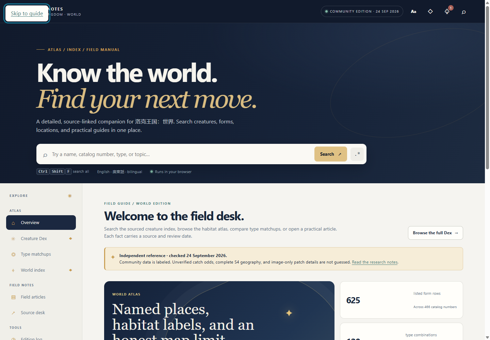

The first two images show production version 1. The additional narrow-view images show a local static build and are not claimed as a published deployment.
Desktop overview
1440 × 1000 · scale 100%

Captured from the live overview with keyboard focus on “Skip to guide.”
Source
Production version 1
Revision
ecfc27f8ca5182465df891a0f516278f9af9fb7f
Capture date/time
Unavailable; no capture-time provenance was recorded.
The desktop and emulated-mobile captures correspond to production deployment appgdep_6ab5de65b7d48191a9c98e2202637567, version 1, built from source revision ecfc27f8ca5182465df891a0f516278f9af9fb7f. The two narrow-view captures show a separate local static build; its production status has not been verified.
The production-version audit found no console errors or exceptions, external-origin requests, failed resources, unnamed interactive controls, or horizontal page overflow at its two viewports. The document accessibility root was present, and keyboard Tab reached a named link with a visible focus outline. The narrow local-build measurements found no horizontal page overflow, unnamed interactive controls, console errors, exceptions, failed resources, or bad status responses; the keyboard path was not exercised. These focused checks are not a complete accessibility certification.